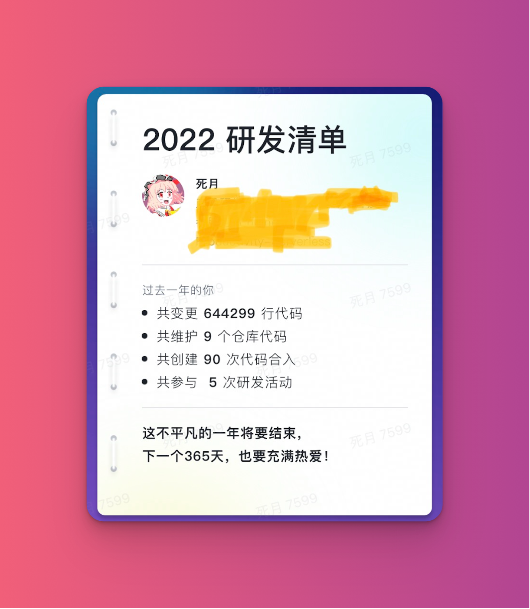
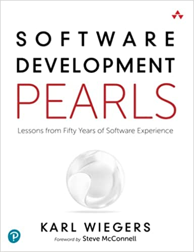
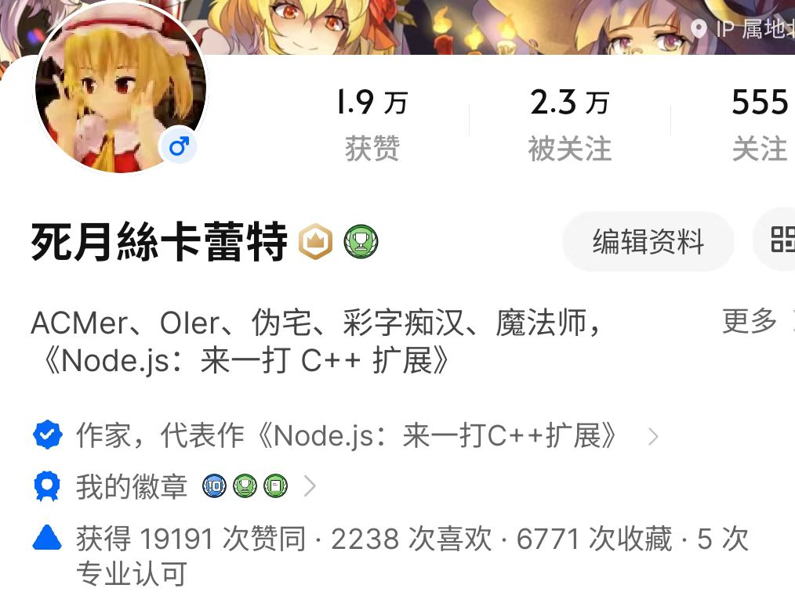

死月的二零二二总结
按照惯例，先上春联，承上启下。去年的：
- 上联：春趁其势以逮牛尾
- 下联：岁攀南风来迎虎喵
- 横批：双生时兮
今年拟的：
- 上联：虎啸龙吟乘风冬远去
- 下联：兔腾鹿跃飞花春沓来
- 横批：新雀初飞
春意伴随凛冬的远去渐渐回暖，但愿早些过了疫情的阴霾吧。今年外公走了，在年初我急性胰腺炎住院那段期间。虽然已经很久没见过外公了，但是似乎一切都好像才几个月之前一样，带着我去街上烧饼店买烧饼，冬日一起坐在小天井晒太阳。
开始奔四了，今年两次住院的经历让我开始惜命。一次是大过年的由于高血脂引起的急性胰腺炎，疼得死去活来大半夜去急诊，还因为过年期间没有医生，硬生生在住院部熬了一个星期，期间下了个雪，百无聊赖写了点东西。
《壬寅大年初七卧病观雪》
几丝柳絮悄入窗，忽而鹅毛漫琉璃。
只因卧床恰回首，堪堪取景飞花城。
2023 年春联的飞花就来自这里。
另一次是一个困扰了我四五年的问题，看了各种科室都误解的头疼，最终在口腔科发现是茎突过长导致的，做了个小手术切除了过长的那段茎突，并笑称自己是杭州君麻吕。
加上今年一整年的疫情，让心情好不起来，总觉得今年是个大凶之年——风水意义上的。的确在阳历年关这会儿还真就赶上潮流阳了。除此之外，还有就是大环境的各种裁员消息，还有身边的人半年没找到合适的工作等等，让人有种兔死狐悲的感觉。只能说是苦中作乐吧。
所以希望新年的春联可以帮着真破旧迎新，这些阴霾都随着虎年去吧，让兔年真的可以春城无处不飞花。
今年关键字：希望。
生活
春联上的“新雀”自然就是 2021 年新添的小丁了。一岁已过，愿能初飞。基于此，我 2022 年的网易云音乐年度报告不再是二次元，听的最多的歌是《小苹果》，396 次。
娱乐
娱乐基本上已经没了，什么 Switch，什么 PS5，都已吃灰。年中的时候，在部门中了两个 PICO 3，也都是玩了两天就吃灰了。不过话说回来，PICO 上的体育游戏还是有点可玩性的，以及爱丽丝梦游仙境那个游戏。剩下的总给人感觉是半成品。至于用 PICO 看电影就更别想了，在电视上看电影都成了奢望。
本来打算年底这会儿去看阿凡达 2，结果就在买的票上时间的前一天，🐑了。没看成。这会儿估计也找不到好的时机看了吧，估摸着等到能看那会儿，这电影自然也就下架了。
虽说以前的常规娱乐不再，但今年好歹是多了个新的娱乐活动——散步。今年出去“散步”的次数应该数比往年都多。以前难得去一次西溪湿地、九溪、西湖等等，今年都去了好多次了，还包括一些小众的景点、公园等等。也因此，今年发现了一些以前没注意到的美景。但这么点路，还是开车去的，运动量根本算不上“徒步”，只能说是“散步”了。
出不去玩，在公司上班时，也会忙里偷闲从公司十二楼拍各种状态下的风景。
今年塑料小人不多，三两个 Myethos 的农药手办。一个地平线 2 的大象手办，青蛇白蛇里的宝青坊主，以及二妹又一尊。泡泡玛特就数不过来了。
天下生意，有来有往。我要的，你给得了吗？
看的东西有了，还入了几个听的东西。
- 《最终幻想 X》黑胶，Yuna 真是学生时代的女神；
- 《仙剑奇侠传音乐原声带》的粉黑胶，算是为青春付个费吧；
- 《妖精的旋律》黑胶，仍旧是学生时代的最爱，Lucy 和 Nyu；
- 《最伟大的作品》CD，黑胶仍没发货；
- 《魔塔大陆 III》的 CD，想学塔语，想去异界，圆学生时代的梦——男人至死是少年；
- 《When We All Fall Asleep》黑胶，冲着碧梨姐买的；
- 然后就是其它一些不一一列举了，还买了一批黑胶盲盒。
年中在 Discogs 买了《Hymn of the Soul》的七寸黑胶，限量版的二手。可能英文名大家没听过，写日文就会觉得眼熟了——《全ての人の魂の詩》，天鹅绒房间的主题曲——P5 天下第一！卖家年中自 USPS 寄出，到现在还没到，快递状态一直是：
Not Trackable
USPS Tracking is unavailable for this product for CHINA.
也不知道它在路上待得还习惯不。P5 是天下第一，今年买的老头环和地平线，玩了几个小时就吃灰了。
足迹
基本上的足迹都是上面提到的杭城散步。剩下的都是出差了。
- 广州·团队出差；
- 深圳·ArchSummit 全球架构师峰会。
本来预计年底还应该去跟北京团队，以及业务方有一波接洽。也受限于特殊事件及疫情没去成。想恢复成 2020 那时，想去各个地方见风景，想继续“每去一个新的城市，都要找一家当地不是那么有名但是有着不错驻唱的酒吧去欣赏”——来自一个中年油腻男的牢骚。
今年两次都是南下。去广州看看团队同学，顺便团建；去深圳 ArchSummit 分享了一下我正在做的事情。今年也算是上了小蛮腰，去了白天鹅的人了。
期望明年足迹能变多吧。
工作
今年的工作有了一定的变化。我又重新开始带团队了，虽然还是大头兵的那种，不过相比起来，多年前在大搜车时简直就是过家家，只是对大家进行任务的分配，连项目管理都算不上。角色的转变，让我又强行从舒适区中拔出来——毕竟兵熊熊一个，将熊熊一窝。今年要对成员负责，除了日常写代码之外，更多的转变是我要做更多的规划，要保证路线不出错——否则很可能带着一帮弟兄们直接成了炮灰，尤其是现在这种全局经济下行的形式下。
上半年还在呼哧咖啦埋头写代码，下半年代码量就急剧下降了。更多的是要挑起方向的责任来，把更多写代码的后背交给同事去做，毕竟他们有更多比我出彩的地方，而我要做的更多的是保证航道不偏，以及以更具前瞻性的眼光看待整个事情。
其实这个转变过程还是有一定痛苦的，尤其是在代码量下降的时候，我会觉得自己的价值变小了。在明知道价值并没有变小，只是从一种形态转换成了另一种形态的情况下，还是会慌的。毕竟不知道自己在新的价值领域中发挥得究竟怎么样。其实路线还是有好多次跑偏的，这其中堂主还是给予了很大的帮助和信任。
今年我开始全情专注于高密度部署解决方案，以及 Web-interoperable Runtime，这在公司内部叫 Goofy Worker。原来撺掇的 China Open Node.js Framework 交给段潇涵去带，其逐渐孵化成功，成了现在的 Artus.js，反响挺好，D2 上也分享了一波。
所以今年来说，工作上的关键字是“转型”。从一个低级 IC 往一个真正的 Tech Leader 上转，好在队友们都挺靠谱的，能交出后背。只能说大家一起成长一起进步吧，共勉。负责一款技术产品在公司内部落地，需要对其前因后果进行负责，要深入去各业务方合作、抱大腿，避免“自嗨”。“我认为我这个东西很好，你要来用”，这种思想不能有。你得真真切切能解决业务方的问题，对他们来说，关心的无非是他们能得到什么收益，稳定性、机器成本、人力成本，以及转化率等等。凡是在这之外的一切，都是自嗨。什么标准，什么更好的架构，这是自己的事情，业务方才不关心。他们怎么样能更好地把业务堆上去才是王道。而负责一个团队的存活时，需要考虑的事情也是我以前从未考虑过的事情，关心每个靠谱队友的成长，帮助其把握、争取好在团队中的定位，这些事情都会因人而异。不同同学的特征会有不同的成长路线，或者职业规划，这些事情我也是一点点在摸索。这个责任太大了，一个做不好，可能会影响到一个同学的职业路程。虽然拉长时间来看，不一定会影响他最终的状态，但如果在我手上被推迟了一两年，也是一个让人心惊肉跳的事情。现在开始理解了我历届 TL 的辛酸了，有我这么一个刺头在，真的难搞。如果之前的我在现在的我的团队里面，我又应该怎么搞？技术是没什么问题了，业务方关心不？
无心插柳
有个无心插柳的小插曲。多年前，我曾在花瓣网研究“主题色提取”，并开源了一个主题色提取的 Node.js 库。我的硕士毕业论文也是相关的内容。没想到在多年后的今年，字节跳动有团队在用这个库。他们把图片的主题色提取出来，进行优化，并最终显示在 App 上。
期间通过飞书找到我，问了一些问题。我自然毫不客气地就帮他们把逻辑迁移到了所谓的 Goofy Worker 上，收益还不小。
除了转型给我带来的挑战之外，还有一个问题就是异地的团队所带来的协作问题。直到年中，方向在杭州多了一个同学之前，除了我一个人，剩下的同学全在广州。这也是我去广州出差的原因。如果大家在同一个 Base，那么很多事情、问题，都有可能是在中午吃饭的时候顺带提一嘴就能解决的；而在异地的时候，就需要经常性地去比较正式的沟通，才能达到比较好的协作效果。普通的沟通协作尚且如此，对于一个 Tech Leader 来说，这个问题就更明显了。尤其是，当时只有我一个人在杭州。不过好在经过一年左右的磨合之后，这方面也顺畅多了。
总结下来，以前是体力累、脑力累，P6 的风波则是情绪累，现在我已经可以拿这个事情自嘲完全没问题了，甚至我的飞书状态是万年不变的“一个 P6”。现在的状态更多的是一个心力累，累的原因则是还没完全适应现在的角色转变。不过从我这几年工作观察下来，即使我适应了这个转变，“心累”将会是一个长期的状态，只能说尽力去适应“心累”吧。
期望明年在工作上能更“游刃有余”吧。不过在现在的经济形势下，谁知道明天会发生什么呢？原来蚂蚁体验技术部那一波熟悉的同事，就这一两年时间已经是“散是满天星”了。有去蔚来扛大旗，有跟我一样来了字节，也有去腾讯搞事情……走了这么一遭，也没白来。还是苏千的那句话：
期望在社区做一些非公司名义的事情，这样不管大家去到哪，至少还有一股力量把大家连接在一起。
某种意义上，Artus.js 算一个吧。
今年还有一个值得高兴的是，高中的 OI 三人组之一 xmerge 今年也从谷歌跳到了我厂，在花旗国做 NLP 相关的事情。
技术 & 社区
今年恢复了分享，一个是技术到了，另一个是也的确得为团队做的事情发声。2021 年的时候，一直在埋头钻研，事情做到一半，也不好拿出来分享。不过今年，原来在淘系的技术也成熟了，他们把 Noslate 开源了出来。这个就是我在 2021 年总结里面说的“基于 V8 开发了 Serverless Worker（Shinki.js）”，也算是一份迟到的答卷。
而今年的分享则有三次，一次是关于我自身的技术成长，另外两次则是为团队的事情发声。
- 掘金公开课：《这是一次水货分享——从小霸王到字节跳动》；
- 前端早早聊前端性能专场：《Web-interoperable Runtime 与高密度部署架构》；
- ArchSummit 深圳站：《Serverless 高密度部署与 Web-interoperable Runtime 在字节跳动的实践》；
- 翻译书籍《Software Development Pearls》，仍在进行中；
- 加入 WinterCG（Web-interoperable Runtime Community Group），将字节跳动的 Logo 印在了社区组首页；
还有一个事情，就是撺掇了几个团队的同事，让他们写一本关于 npm 的书，可能明年就可以跟大家见面啦。也算是某种意义上的“帮助其成长”？
翻译书籍
在这里我要给《Software Development Pearls》中文版的编辑道个歉，真的是因为今年太心累了，所以这本书进展缓慢。不过我仍旧是以“我自身的最高水平”去对待这本书，虽然进度慢了，但自我认知上质量还是在线的。

这不是一本技术书籍，而是涵盖了软件工程各领域的一本书籍。包括需求分析、设计、项目管理、测试等等。恨只恨我大学的时候对“软件工程”嗤之以鼻，只有一个模糊的印象，全把技能点点在了代码上面，剩下的都还给老师了。现在补起课来格外痛苦。我有一个大胆的想法，之前高中时代跟我一起搞 OI 的好机油们，现在都散落在世界各个角落，也都涵盖了软件工程的各个领域，到时候想集合他们一起各写个推荐语印在书上。
参会
今年做了三次分享，其中一次是参会。ArchSummit 全球架构师峰会。极客时间其实也挺不容易的，疫情之下，这些会议都不好搞。今年难得重拾起来，其实在深圳的那次还是战战兢兢，到场率也并没有以前那么爆棚——以前的会场座位都全坐满，甚至地上还坐了一群人。
ArchSummit 上参加的是前端 Serverless 研发体系建设专场，贡献的话题就是我今年一年所做的事情，Web-interoperable Runtime 及高密度部署。前者是我们搞的 JavaScript 运行时，后者是这个运行时在实践中所使用的架构。
去语雀围观。
剩下两次都是线上分享。一次是掘金的公开课，首次公开地讲述了我的技术成长历程，也算是对自己打小入坑的一次回顾总结吧。从小霸王入坑，以游戏为目标，最终入了 Node.js 的“歧途”。
去语雀围观。
还有一次则是线上的前端早早聊性能专场。算是对今年所做事情分享的一个“提前练兵”。我现在已经算是做过各种线上线下大会的分享，也组织过小会。在“参会”这条路上，应该就还剩“出品”这个事情没做了。
知乎
今年申请了知乎认证，神奇的是我申请的认证是“作家”，代表作《Node.js：来一打 C++ 扩展》，居然认证成功了。以后我高低算个“作家”了🤪。

以及，接着“小霸王”的上头劲，以及之前天猪业做过一次长文的回顾，我也在上面做了一次文字版的回顾。
记录下这些文字的原因很简单，其实里面有些事情的细节我已经模糊了。我怕我再不记录下来，以后记忆力减退，老了后，我都不知道我以前都干过哪些事。现在有一个遗憾就是，我已经忘了小学时候的电脑老师给我的那本关于用 Turbo C 写图形的书是什么了。我就记得里面有画房子、画狗什么的。所以再不记下来，以后更多事情都会消散于细胞的衰老——毕竟这些事，如果我不记得，就更没人记得了。
再比如，依稀记得小时候去蹭同学家电脑玩，有一款游戏长得跟 M 豆人一样，可以制造关卡自己玩。但我甚至都不知道这个游戏的名字。
啊，不能再说下去了，人到一定年纪就喜欢说这些事情。真的是年纪到了。
二〇二一的 Checklist
快速熟悉并上手今年的新角色——无论是生活上还是工作上的；- 团队的小伙伴尽可能多地培养成领域的有深度的专家；
翻译并出版《软件开发珠玑》；（完成一半，还在翻译）过得开心。
适应新角色，只能说马马虎虎吧。不至于无法适应，但说自己做得有多好，也没有。毕竟这两个角色都是第一次扮演，我也没有经验。
第二点，也只能说尽自己所能去做，至于效果如何，也都是在摸索中。
第三点，因为今年还在适应角色的转变，心累，所以进度比较缓慢。再次跟编辑大大道个歉。
最后，从各方面说，有很开心的点，也有苦中作乐。除了感觉今年年份比较凶，大抵都还好吧。心态比以前平和多了。
展望二〇二三
- 期望能恢复以前出去玩的状态；
- 期望做一个好爸爸；
- 期望能真正承担起一个团队的责任；
- 翻译并出版《软件开发珠玑》；
- 过得开心。
Ask me anything: https://github.com/xadillax/ama